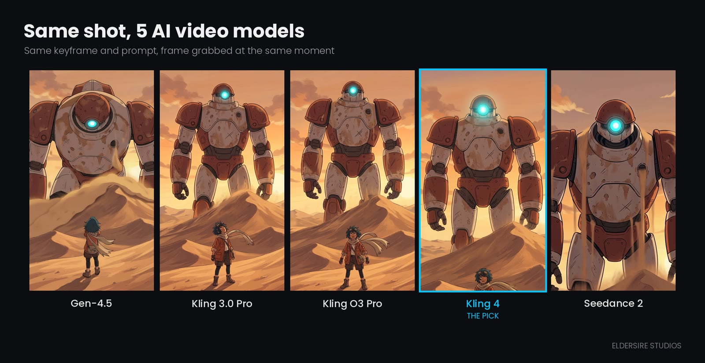

01
Model shoot-outSame shot, five video models
One keyframe and one prompt, sent to Gen-4.5, Kling 3.0 Pro, Kling O3 Pro, Kling 4 and Seedance 2, then compared frame by frame. Gen-4.5 warped the Titan's head, Seedance cropped the shot, and Kling 4 kept both characters on-model.

What we keptKling 4 for motion. Model choice is tested per shot type, not assumed.